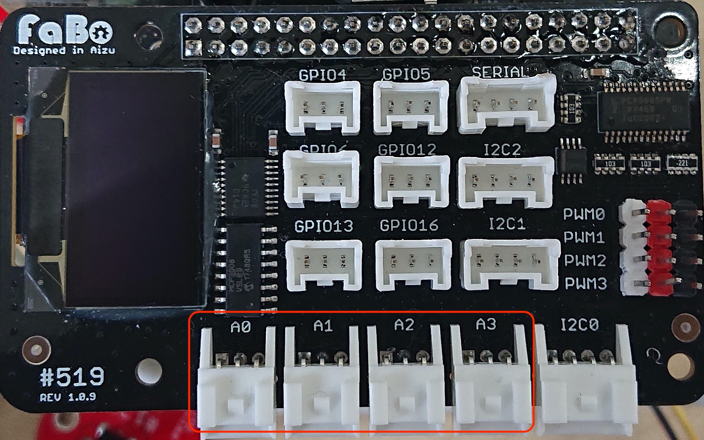

108 temperature
サンプルコードの動作
FaBo #108 temprature Brickを使用してアナログ値を計測
サンプルコード使用時の接続
GPIO4にLED Brickを接続、A0にAnalog Brickを接続します。

JETSON NANO GPIO40ピン
| ピン番号 | Jetson.GPIO番号 | NAME | ピン番号 | Jetson.GPIO番号 | NAME |
|---|---|---|---|---|---|
| 1 | - | 3.3V | 2 | - | 5V |
| 3 | 2 | I2C_2_SDA | 4 | - | 5V |
| 5 | 3 | I2C_2_SCL | 6 | - | GND |
| 7 | 4 | AUDIO_MCLK | 8 | 14 | UART_2_TX |
| 9 | - | GND | 10 | 15 | UART_2_RX |
| 11 | 17 | UART_2_RTS | 12 | 18 | I2S_4_SCLK |
| 13 | 27 | SPI_2_SCK | 14 | - | GND |
| 15 | 22 | LCD_TE | 16 | 23 | SPI_2_CS1 |
| 17 | - | 3.3V | 18 | 24 | SPI_2_CS0 |
| 19 | 10 | SPI_1_MOSI | 20 | - | GND |
| 21 | 9 | SPI_1_MISO | 22 | 25 | SPI_2_MISO |
| 23 | 11 | SPI_1_SCK | 24 | 8 | SPI_1_CS0 |
| 25 | - | GND | 26 | 7 | SPI_1_CS1 |
| 27 | - | I2C_1_SDA | 28 | - | I2C_1_SCL |
| 29 | 5 | CAM_AF_EN | 30 | - | GND |
| 31 | 6 | GPIO_OZ0 | 32 | 12 | LCD_BL_PWM |
| 33 | 13 | GPIO_PE6 | 34 | - | GND |
| 35 | 19 | I2S_4_LRCK | 36 | 16 | UART_2_CTS |
| 37 | 26 | SPI_2_MOSI | 38 | 20 | I2S_4_SDIN |
| 39 | - | GND | 40 | 21 | I2S_4_SDOUT |
準備
SPIをつかえるようにしましょう。
Jetson-IO toolを起動します。
sudo /opt/nvidia/jetson-io/jetson-io.py
pip3がインストールされていない場合は、
$sudo apt-get install python3-pip
pythonでSPIをつかうためのspidevをインストールします。
$pip3 install spidev
SPIdevの使い方。 https://pypi.org/project/spidev/
サンプルコード
# coding: utf-8
import spidev
import time
import sys
# A0コネクタにTemperatureを接続
TEMPPIN = 0
def readadc(channel):
adc = spi.xfer2([1,(8+channel)<<4,0])
data = ((adc[1]&3) << 8) + adc[2]
return data
def arduino_map(x, in_min, in_max, out_min, out_max):
return (x - in_min) * (out_max - out_min) // (in_max - in_min) + out_min
# 初期化
spi = spidev.SpiDev()
spi.open(0,0)
spi.max_speed_hz = 5000
try:
while True:
data = readadc(TEMPPIN)
volt = arduino_map(data, 0, 1023, 0, 5000)
temp = arduino_map(volt, 300, 1600, -30, 100)
sys.stdout.write("\rtemp = %f" % (temp))
sys.stdout.flush()
time.sleep( 0.5 )
except KeyboardInterrupt:
spi.close()
sys.exit(0)